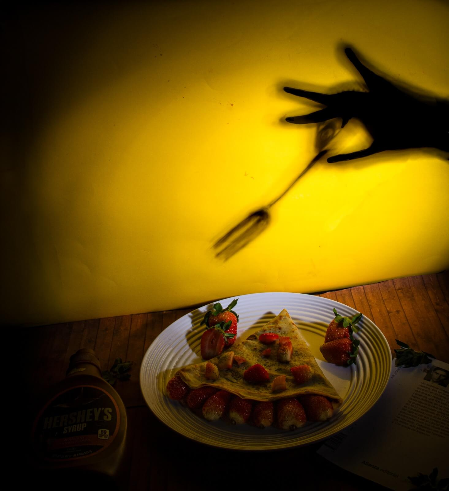
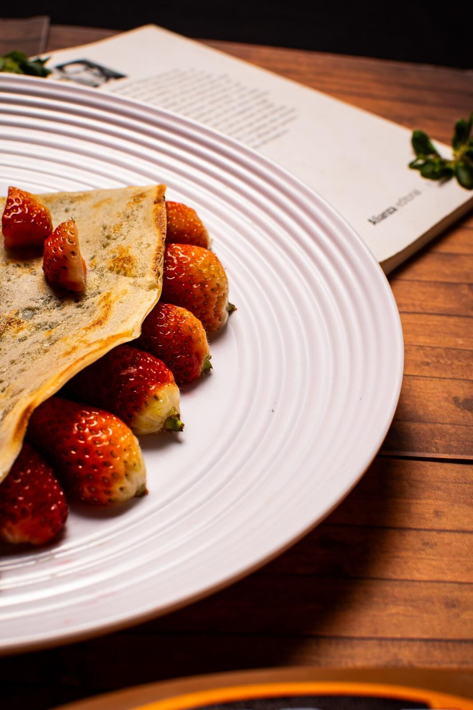
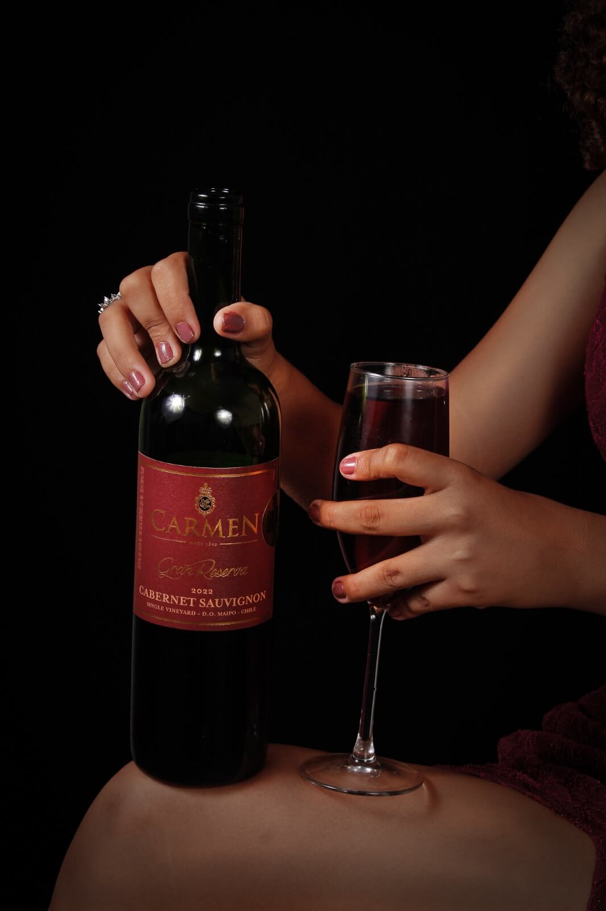

Alimento y Bebida.

Antojo irresistible.
Este tipo de fotografía tiende a tener una composición que es enfocada a los alimentos, con una profundidad de campo que dirige la tentación y crean una atmosfera cálida e íntima, ideales para publicidad en redes sociales o menús de restaurantes.

El lado dulce.
Fotos creativas crean apetito. La sombra del tenedor y la mano crea un contraste con el color amarillo del fondo, mientras la crepa y las fresas le dan el toque principal de la escena. Son útiles este tipo de fotografías en la gastronomía conceptual para publicidad, redes sociales o contenido de restaurantes, buscando presentar la comida de una manera diferente y llamar la atención del espectador.

Antojo irresistible.
Este tipo de fotografía tiende a tener una composición que es enfocada a los alimentos, con una profundidad de campo que dirige la tentación y crean una atmosfera cálida e íntima, ideales para publicidad en redes sociales o menús de restaurantes.

Un brindis a media noche.
Esta fotografía busca transmitir lo que es la elegancia, y celebración. Ya que, al mostrar la copa en primer plano, junto con la iluminación oscura y el vestuario brillante, crea un ambiente sofisticado y un poco misterioso, estas fotografías buscan transmitir lo conceptual o publicidad para bebidas, eventos o contenido de redes sociales, buscando transmitir una sensacion de lujo y una experiencia especial.